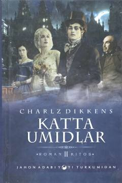

KUCharlz Dikkensning yosh Filipp taqdiri haqida hikoya qiluvchi mashhur romani.
Charlz Dikkensning mashhur "Katta umidlar" romani yetim yigit Filippning boshidan kechirgan sarguzashtlari va hayotidagi kutilmagan burilishlarni hikoya qiladi. Asar insoniylik, muhabbat va jamiyatdagi ijtimoiy tabaqalar mavzularini ochib beradi. Mazkur nashr Ziyo nashr nashriyoti tomonidan chop etilgan.